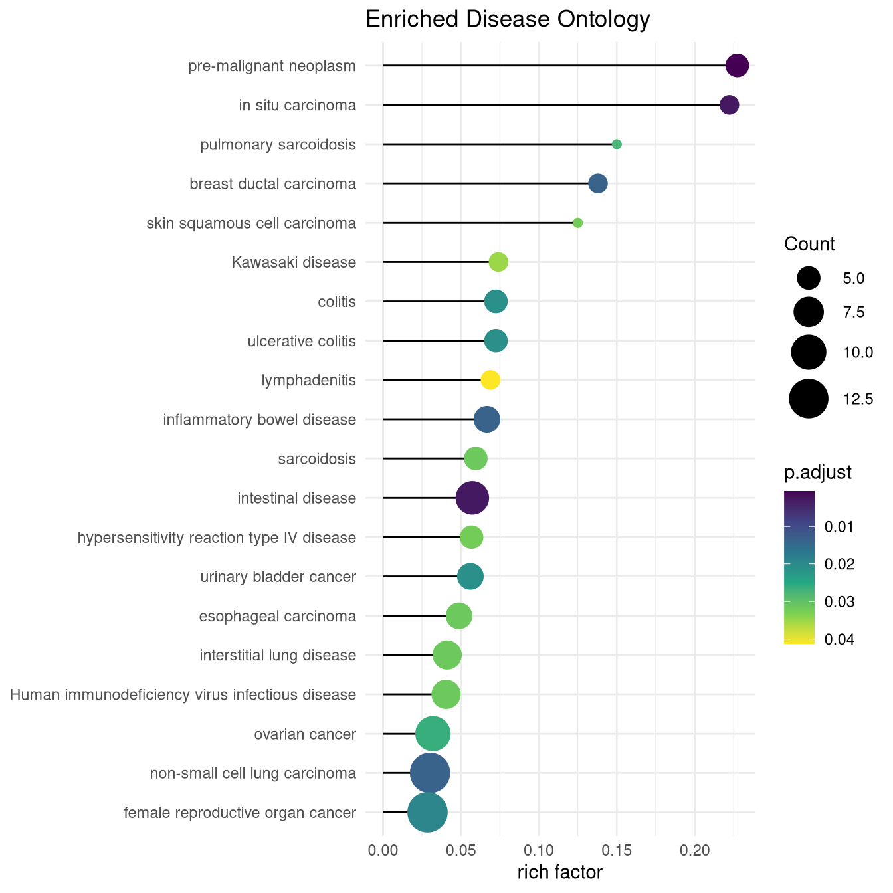
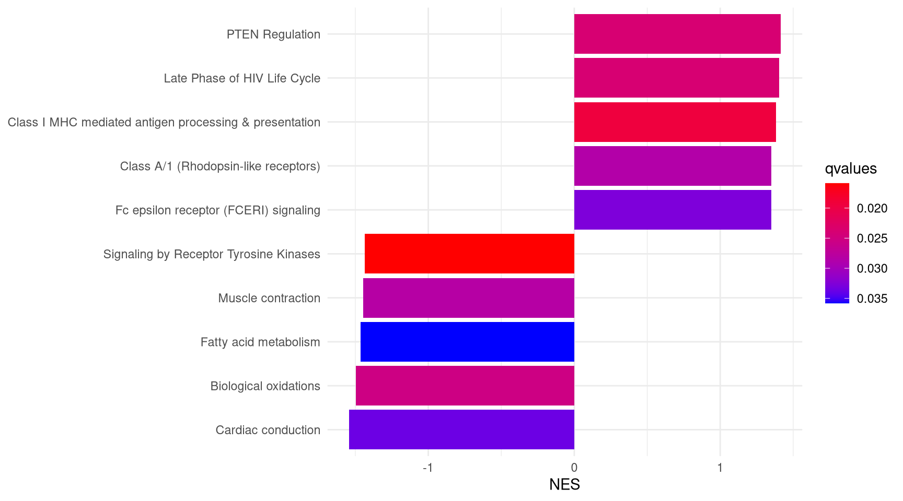

Chapter 15 dplyr verbs for manipulating enrichment result
library(DOSE)
data(geneList)
de = names(geneList)[1:100]
x = enrichDO(de)15.1 filter
filter(x, p.adjust < .05, qvalue < 0.2)## #
## # over-representation test
## #
## #...@organism Homo sapiens
## #...@ontology DO
## #...@keytype ENTREZID
## #...@gene chr [1:100] "4312" "8318" "10874" "55143" "55388" "991" "6280" "2305" ...
## #...pvalues adjusted by 'BH' with cutoff <0.05
## #...28 enriched terms found
## 'data.frame': 28 obs. of 9 variables:
## $ ID : chr "DOID:0060071" "DOID:5295" "DOID:8719" "DOID:3007" ...
## $ Description: chr "pre-malignant neoplasm" "intestinal disease" "in situ carcinoma" "breast ductal carcinoma" ...
## $ GeneRatio : chr "5/77" "9/77" "4/77" "4/77" ...
## $ BgRatio : chr "22/8007" "157/8007" "18/8007" "29/8007" ...
## $ pvalue : num 1.67e-06 1.76e-05 2.18e-05 1.56e-04 2.08e-04 ...
## $ p.adjust : num 0.00064 0.00279 0.00279 0.0136 0.0136 ...
## $ qvalue : num 0.000461 0.002008 0.002008 0.009796 0.009796 ...
## $ geneID : chr "6280/6278/10232/332/4321" "4312/6279/3627/10563/4283/890/366/4902/3620" "6280/6278/10232/332" "6280/6279/4751/6286" ...
## $ Count : int 5 9 4 4 13 6 13 5 5 6 ...
## #...Citation
## Guangchuang Yu, Li-Gen Wang, Guang-Rong Yan, Qing-Yu He. DOSE: an
## R/Bioconductor package for Disease Ontology Semantic and Enrichment
## analysis. Bioinformatics 2015, 31(4):608-60915.2 arrange
mutate(x, geneRatio = parse_ratio(GeneRatio)) %>%
arrange(desc(geneRatio))## #
## # over-representation test
## #
## #...@organism Homo sapiens
## #...@ontology DO
## #...@keytype ENTREZID
## #...@gene chr [1:100] "4312" "8318" "10874" "55143" "55388" "991" "6280" "2305" ...
## #...pvalues adjusted by 'BH' with cutoff <0.05
## #...28 enriched terms found
## 'data.frame': 28 obs. of 10 variables:
## $ ID : chr "DOID:3908" "DOID:120" "DOID:2394" "DOID:3459" ...
## $ Description: chr "non-small cell lung carcinoma" "female reproductive organ cancer" "ovarian cancer" "breast carcinoma" ...
## $ GeneRatio : chr "13/77" "13/77" "10/77" "10/77" ...
## $ BgRatio : chr "431/8007" "455/8007" "312/8007" "383/8007" ...
## $ pvalue : num 2.08e-04 3.52e-04 7.54e-04 3.48e-03 1.76e-05 ...
## $ p.adjust : num 0.0136 0.01928 0.02625 0.04756 0.00279 ...
## $ qvalue : num 0.0098 0.01389 0.0189 0.03424 0.00201 ...
## $ geneID : chr "6280/2305/9133/6279/7153/6278/6241/11065/10232/332/6286/3002/9212" "4312/6279/7153/3627/820/983/10232/6362/332/6286/9212/4321/6790" "4312/820/983/10232/6362/332/6286/9212/4321/6790" "4312/6280/6279/7153/4751/890/4085/332/6286/6790" ...
## $ Count : int 13 13 10 10 9 7 7 6 6 6 ...
## $ geneRatio : num 0.169 0.169 0.13 0.13 0.117 ...
## #...Citation
## Guangchuang Yu, Li-Gen Wang, Guang-Rong Yan, Qing-Yu He. DOSE: an
## R/Bioconductor package for Disease Ontology Semantic and Enrichment
## analysis. Bioinformatics 2015, 31(4):608-60915.3 select
select(x, -geneID) %>% head## ID Description GeneRatio BgRatio
## DOID:0060071 DOID:0060071 pre-malignant neoplasm 5/77 22/8007
## DOID:5295 DOID:5295 intestinal disease 9/77 157/8007
## DOID:8719 DOID:8719 in situ carcinoma 4/77 18/8007
## DOID:3007 DOID:3007 breast ductal carcinoma 4/77 29/8007
## DOID:3908 DOID:3908 non-small cell lung carcinoma 13/77 431/8007
## DOID:0050589 DOID:0050589 inflammatory bowel disease 6/77 90/8007
## pvalue p.adjust qvalue Count
## DOID:0060071 1.671524e-06 0.0006401937 0.0004609887 5
## DOID:5295 1.759049e-05 0.0027885022 0.0020079362 9
## DOID:8719 2.184205e-05 0.0027885022 0.0020079362 4
## DOID:3007 1.564603e-04 0.0136037018 0.0097957122 4
## DOID:3908 2.075001e-04 0.0136037018 0.0097957122 13
## DOID:0050589 2.131128e-04 0.0136037018 0.0097957122 615.4 mutate
y <- mutate(x, richFactor = Count / as.numeric(sub("/\\d+", "", BgRatio)))
y## #
## # over-representation test
## #
## #...@organism Homo sapiens
## #...@ontology DO
## #...@keytype ENTREZID
## #...@gene chr [1:100] "4312" "8318" "10874" "55143" "55388" "991" "6280" "2305" ...
## #...pvalues adjusted by 'BH' with cutoff <0.05
## #...28 enriched terms found
## 'data.frame': 28 obs. of 10 variables:
## $ ID : chr "DOID:0060071" "DOID:5295" "DOID:8719" "DOID:3007" ...
## $ Description: chr "pre-malignant neoplasm" "intestinal disease" "in situ carcinoma" "breast ductal carcinoma" ...
## $ GeneRatio : chr "5/77" "9/77" "4/77" "4/77" ...
## $ BgRatio : chr "22/8007" "157/8007" "18/8007" "29/8007" ...
## $ pvalue : num 1.67e-06 1.76e-05 2.18e-05 1.56e-04 2.08e-04 ...
## $ p.adjust : num 0.00064 0.00279 0.00279 0.0136 0.0136 ...
## $ qvalue : num 0.000461 0.002008 0.002008 0.009796 0.009796 ...
## $ geneID : chr "6280/6278/10232/332/4321" "4312/6279/3627/10563/4283/890/366/4902/3620" "6280/6278/10232/332" "6280/6279/4751/6286" ...
## $ Count : int 5 9 4 4 13 6 13 5 5 6 ...
## $ richFactor : num 0.2273 0.0573 0.2222 0.1379 0.0302 ...
## #...Citation
## Guangchuang Yu, Li-Gen Wang, Guang-Rong Yan, Qing-Yu He. DOSE: an
## R/Bioconductor package for Disease Ontology Semantic and Enrichment
## analysis. Bioinformatics 2015, 31(4):608-609library(ggplot2)
library(forcats)
library(enrichplot)
ggplot(y, showCategory = 20,
aes(richFactor, fct_reorder(Description, richFactor))) +
geom_segment(aes(xend=0, yend = Description)) +
geom_point(aes(color=p.adjust, size = Count)) +
scale_color_viridis_c(guide=guide_colorbar(reverse=TRUE)) +
scale_size_continuous(range=c(2, 10)) +
theme_minimal() +
xlab("rich factor") +
ylab(NULL) +
ggtitle("Enriched Disease Ontology")
A very similar concept is Fold Enrichment, which is defined as the ratio of two proportions, (k/n) / (M/N). Using mutate to add the fold enrichment variable is also easy:
mutate(x, FoldEnrichment = parse_ratio(GeneRatio) / parse_ratio(BgRatio))15.5 slice
We can use slice to choose rows by their ordinal position in the enrichment result. Grouped result use the ordinal position with the group.
In the following example, a GSEA result of Reactome pathway was sorted by the absolute values of NES and the result was grouped by the sign of NES. We then extracted first 5 rows of each groups. The result was displayed in Figure 15.1.
library(ReactomePA)
data(geneList)
x <- gsePathway(geneList)
y <- arrange(x, abs(NES)) %>%
group_by(sign(NES)) %>%
slice(1:5)
library(forcats)
library(ggplot2)
library(ggstance)
library(enrichplot)
ggplot(y, aes(NES, fct_reorder(Description, NES), fill=qvalues), showCategory=10) +
geom_barh(stat='identity') +
scale_fill_continuous(low='red', high='blue', guide=guide_colorbar(reverse=TRUE)) +
theme_minimal() + ylab(NULL)

Figure 15.1: Choose pathways by ordinal positions.
15.6 summarise
pi=seq(0, 1, length.out=11)
mutate(x, pp = cut(pvalue, pi)) %>%
group_by(pp) %>%
summarise(cnt = n()) %>%
ggplot(aes(pp, cnt)) + geom_col() +
theme_minimal() +
xlab("p value intervals") +
ylab("Frequency") +
ggtitle("p value distribution")